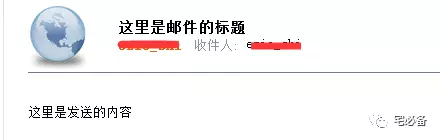

5.使用Python发送邮件
上节讲了如何利用Python连接Oracle数据库并执行语句
其中讲到了利用查看表空间的使用率，这时我们就可以利用Python监控这个数值，等超过阈值后发送邮件通知我们
这节就讲述如何利用Python的email模块发送邮件
注意该模块是自带的，无需安装
环境设置
Linux系统为 Centos 6.8
Python环境为 Python 3.6
使用Python发送邮件
我们新建一个文件，命名为sendmail.py,内容如下
路径为:/home/oracle/script/sendmail.py
#!/usr/bin/python
#coding=utf-8
import smtplib
import os
import time
from email.mime.text import MIMEText
to_list=["<ezio_shi@aseglobal.com>"]
#to_list=["<1391111111@139.com>"]
mail_host="10.65.1.134" #设置服务器
mail_user="ezio_shi" #用户名
mail_postfix="aseglobal.com" #发件箱的后缀
def send_mail(to_list,sub,content): #to_list：收件人；sub：主题；content：邮件内容
me="<"+mail_user+"@"+mail_postfix+">" #这里的hello可以任意设置，收到信后，将按照设置显示
msg = MIMEText(content) #创建一个实例，这里设置为html格式邮件
msg['Subject'] = sub #设置主题
msg['From'] = me
msg['To'] = ";".join(to_list)
try:
s = smtplib.SMTP()
s.connect(mail_host) #连接smtp服务器
#s.set_debuglevel(1)
s.helo()
#s.starttls()
#s.login(mail_user,mail_pass) #登陆服务器,一般公司内部无需认证
s.sendmail(me, to_list, msg.as_string()) #发送邮件
s.close()
return True
except Exception as e:
print (str(e))
return False
if __name__ == '__main__':
#多个收件人请用逗号隔开
content='这里是发送的内容'
sub='这里是邮件的标题'
s=send_mail(to_list,sub,content)
print (s)
注意此代码适用于公司内部有SMTP服务器的情况
运行结果
当返回值为True时说明发送成功
[oracle@asensvr-monitor script]$ python sendmail.py
True
同时会收到以下邮件

可以看到发送成功
源码位置
https://github.com/bsbforever/wechat_oms
至此使用Python发送邮件已经讲完，下节讲述如何自动化监控Oracle表空间使用率